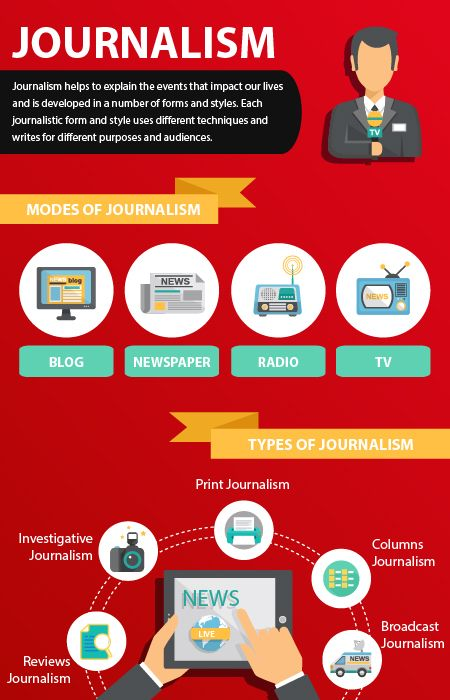

Features

A full-stack developer helps build and maintain both the front-end and the back-end of a website.
Learn about full-stack developer skills, salary, and how you can become one.
Capture visual content as well as edit short- and long-form video content · Help maintain brand identity during editing ·
Work with producers, scriptwriters,

Journalism or news writing is a prose style used for reporting in newspapers, radio, and television.